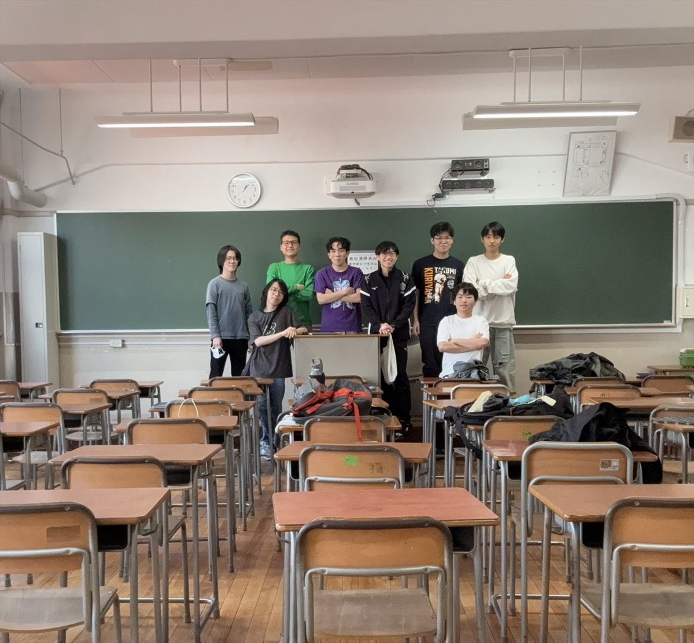
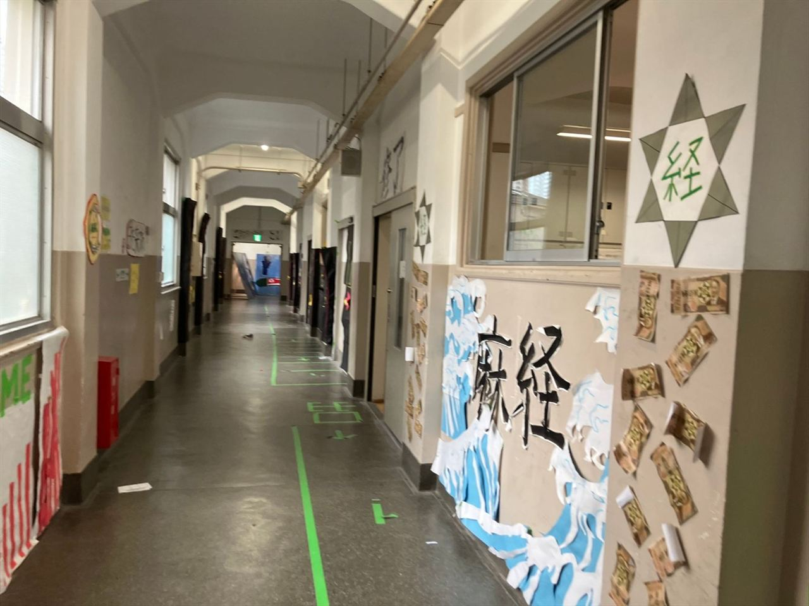

入口・出口のドアの上
入門→修了
入口の上には「入門」、出口の上には「修了」。経済という学問の門をくぐって、修めて出ていく。来た人に、そんなふうに楽しんでほしくて。
筆文字ふうに、画用紙で
Azabu High School Cultural Festival
世の中の仕組みを理解し、自らで仕組みを創り出す。
3年前の構想が、今ここに結実する。
AZAKEI が毎年の文化祭で開く体験型展示、それが「麻布経済展」です。

Understanding the World's System
Our Concept
世の中の仕組みを理解して、自分たちで仕組みを作っていこう。それが私たちの出発点です。経済をエンターテインメントに。誰もが「仕組み」に触れられる体験を。
Our Aim
文化祭の前に、実行委員会へ出した計画書から。展示をつくる前に、私たちが考えていたことです。
目的
身近な体験を通して、
「経済」と「リスクマネジメント」の
楽しさと、大切さを伝える。
あわせて、その年に生まれたばかりの私たちの同好会の活動を、知ってもらうこと。
いちばん届けたい人
お小遣いが増えたり、アルバイトを始めたりして、投資や経済に興味を持ちはじめるのが中高生。でも、自立はしていないし、「経済ってよくわからない。何から始めればいいの？」という時期でもあります。
だから、5 枚のチップをどう使って増やすかを考えるゲームにしました。遊びながらリスクマネジメントの大切さを知り、経済や投資の世界へ踏み出すきっかけに。ゲームには難しさを選べるようにして、大人も子どもも楽しめるようにしています。
The Story
Prepare
文化祭の前。パネルを組み立て、ポスターを貼り、いつもの教室を少しずつ展示会場に変えていきました。
Enter
廊下の入口には「GAME」の看板と「麻経」の大波。ここから先は、経済を遊ぶ場所です。
Chips
受付で、全員同じ枚数のチップを受け取ります。入口には六芒星と、オリジナルの紙幣。
Play
クイズ、カードゲーム、クロスワード。安全策をとるか、リスクをとるか。チップの増減が、そのまま経済活動の模写です。
Discover
教室の壁いっぱいの「エコノミスト診断」。矢印をたどると、自分の投資家タイプがわかります。
Record
黒板に書かれたその日のランキング。1 位はチップ 120 枚、スタートの 24 倍でした。
Finale
いちばん多かった 2 日目は 1,152 人。たくさんのご来場、ありがとうございました。また来年、麻布経済展で。
How it Works
チップを増減させていく過程こそが、経済活動の模写。獲得したチップをどう運用するかは、あなた次第。
あなたは稼げる人？
それとも失敗する人？
経済って難しそう……。でも、このゲームを体験すれば全部わかる。チップを賭けて増やすだけ。ただし、選び方を間違えると一瞬で失う！？
Original Bill
会場の入口の壁には、AZAKEI がつくったオリジナル紙幣が貼られていました。「麻経展」の文字と、六芒星の「経」の印。
※ 実物をもとにした 3D のイメージです（肖像の位置は AZAKEI の印にしています）。押すと裏返ります。
Quiz
難しさを選んで 2 問に挑戦。安全策をとるか、リスクをとるか。正解数と難しさで、賭けたチップの倍率が決まります。
| 正解数 | かんたん | 普通 | 激ムズ |
|---|---|---|---|
| 2 問正解 | ×2 | ×3 | ×6 |
| 1 問正解 | ×1 | ×2 | ×3 |
| 0 問正解 | ×0 | ×0 | ×0 |
Card game
Record
会場の黒板に書かれた、ある日のランキングです。最後のチップが 40 枚以上になった人には、シャーペンをプレゼントしました。
Special

Activities
02
駆け引きが重要となるオリジナル戦略ゲーム。
03
思考を巡らせ、言葉の繋がりから経済を解く。
05
特定のテーマを深掘りする対話の場。
06
社会と経済のリアルを伝える独自展示。
Decoration Plan
計画書の「内外装計画書」は、方眼紙に鉛筆の手描きでした。教室の壁一面ぶんの飾りに、ひとつずつ理由があります。
入口・出口のドアの上
入門→修了
入口の上には「入門」、出口の上には「修了」。経済という学問の門をくぐって、修めて出ていく。来た人に、そんなふうに楽しんでほしくて。
筆文字ふうに、画用紙で
廊下の窓の下
麻経展
大きな筆文字で。経済の大胆さや、力強さを表すため。日本経済新聞の題字が筆文字なのも、理由のひとつです。
黒の画用紙で、大きく
「麻経展」の文字の下
腕 × 10
画用紙でつくった 10 本の腕と手が、おもちゃのお札をつかもうと伸びる。お金を求める気持ちと、かせぐ喜び。経済の展示だと、ひと目でわかるように。
腕と手 × 10、お札をバラバラに
黒板の左下
お金のなる木
黄色と緑の模造紙で木をつくり、おもちゃのお札とコインを実らせる。「お金のなる木」を、そのまま形に。
模造紙（黄・緑）＋おもちゃの札
※ 文化祭の前に出した計画書の装飾プランです。当日の飾りつけとは、ちがうところもあります。
Visitor Guide
Azabu Economic Exhibition
麻布経済展のまわり方
※ 2026 年の内容です。次回のくわしい情報は、決まりしだい日程・イベントでお知らせします。
3D Room
中3-5 教室を、上から見下ろす模型にしました。ドラッグで回して、番号を押すと場所の説明。「順路を再生」で、チップが会場をひと回りします。
※ 文化祭の前に出した計画書のレイアウト（1 マス 25cm）をもとにした模型です。実際の会場とは、少しちがうところがあります。
Information
場所：東京都港区元麻布2-3-29 麻布中高内
教室：中3-5
Timetable 2026.05.01 – 05.03
5/1金
5/2土
5/3日・祝
特別企画 … 討論・対談（13:00–14:00）